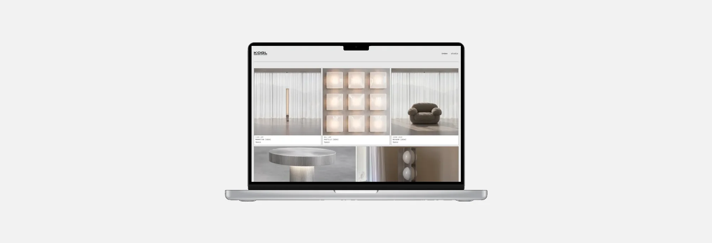
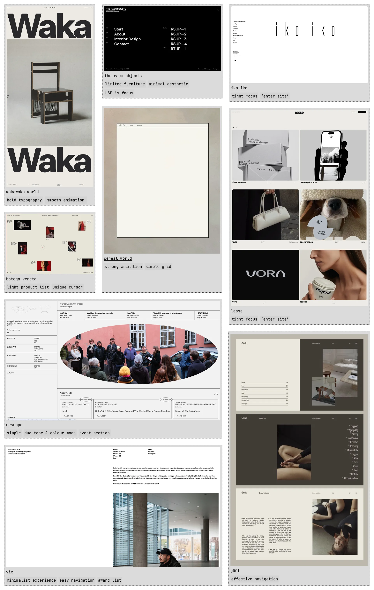
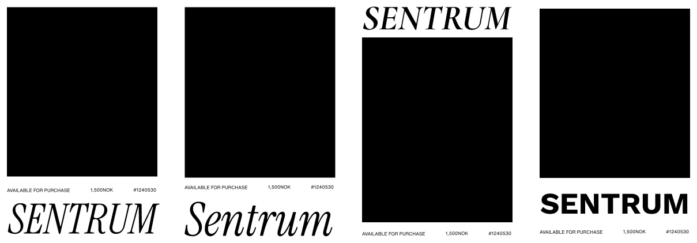
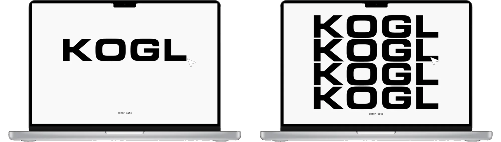
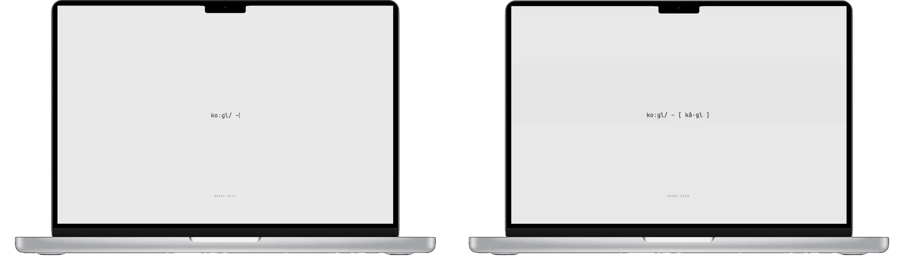
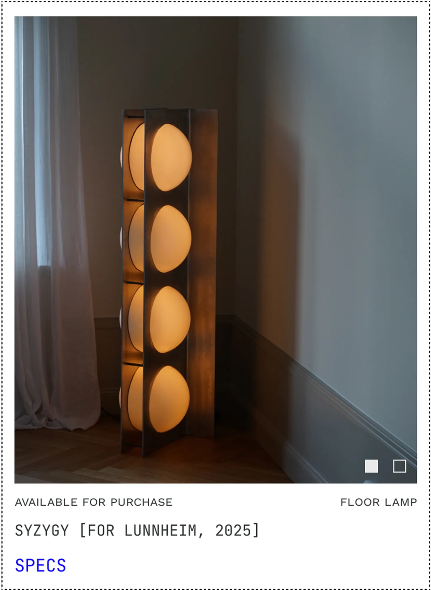
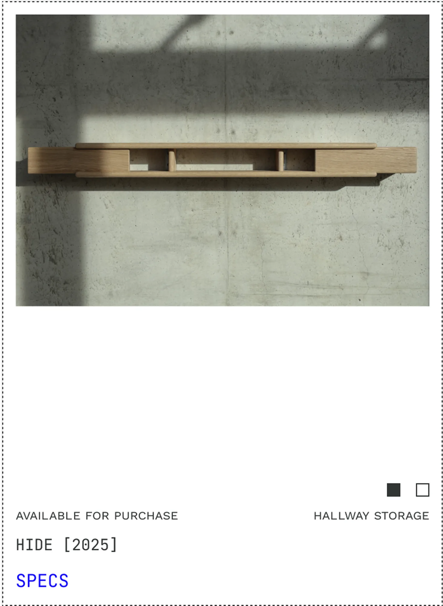
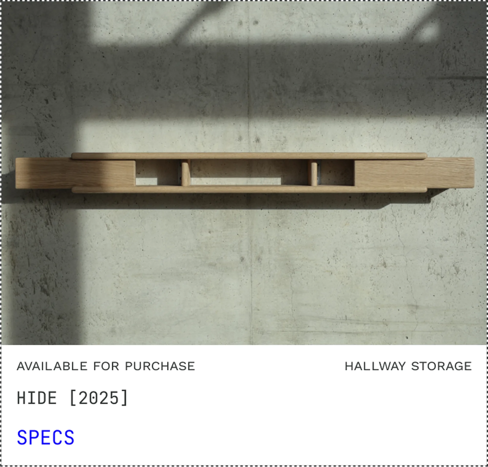
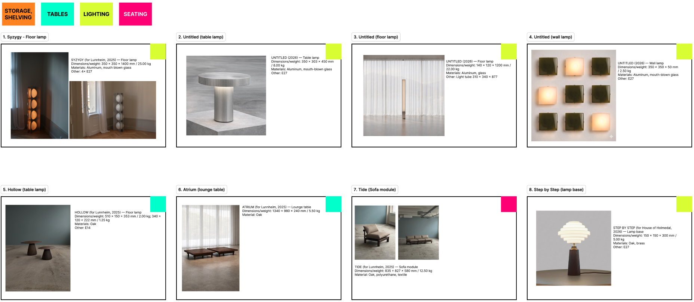

Kogl: Establishing Web Presence
Designing a product listing site for Kogl, an Oslo furniture studio, launched in time for Milan Design Week 2026.

Problem
Kogl had a growing collection but no digital presence to attract customers, manufacturers and collaborators. The ask: a minimalist product listing site that could grow into e-commerce, ready for Milan Design Week 2026.
01Explore
I worked from one board: type studies for the name, and the reference sites I kept going back to.
I annotated each reference with what it does well, like bold type with smooth animation, or limited furniture with a minimal aesthetic. That set the type, spacing and grid.


02Splash
People struggled to pronounce Kogl, so the landing page teaches you how to say it.
The founders ran into this most at international events. We chose a phonetic animation over a logomark hover, so every visitor gets the pronunciation before entering the site.


03Cards
The card snaps to each image's own dimensions instead of forcing one height.
Each category also got its own colour, tagged onto the card, so a collection reads at a glance.




04Build
Designed mobile-first, with each image's crop following the column it lands in.
Frequent check-ins with the developer and founders kept to a quick turnaround. The site launched in time for Milan Design Week 2026.
Try it: pick a device or drag the side handles to resize ↓
Client
Working with Mary was a seamless experience from start to finish. She took the time to understand our needs and requirements, and came back with a website design that felt tailored to us, our industry and our target audience.
Throughout the project, Mary guided us from the initial brief through the development and finalisation of the website. She made the process feel clear and collaborative, especially with the developer, and her thoughtful approach gave us confidence in the direction we were taking.
The result is a website that reflects who we are and communicates what we do in a clear and engaging way. We really appreciated Mary’s professionalism, creativity and attention to detail, and would happily recommend her to anyone looking for a UX Designer who can bring their vision to life.
Jonas Oppedal and Christian Sandbye, Founders, Kogl
What I learned
Before the catalogue, a visitor needs confidence. Answering the smallest question, how to say the name, shows what the Kogl team values: the details.